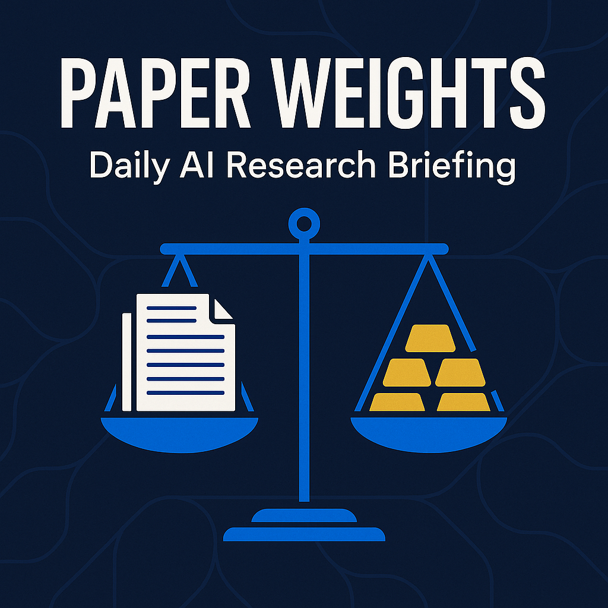
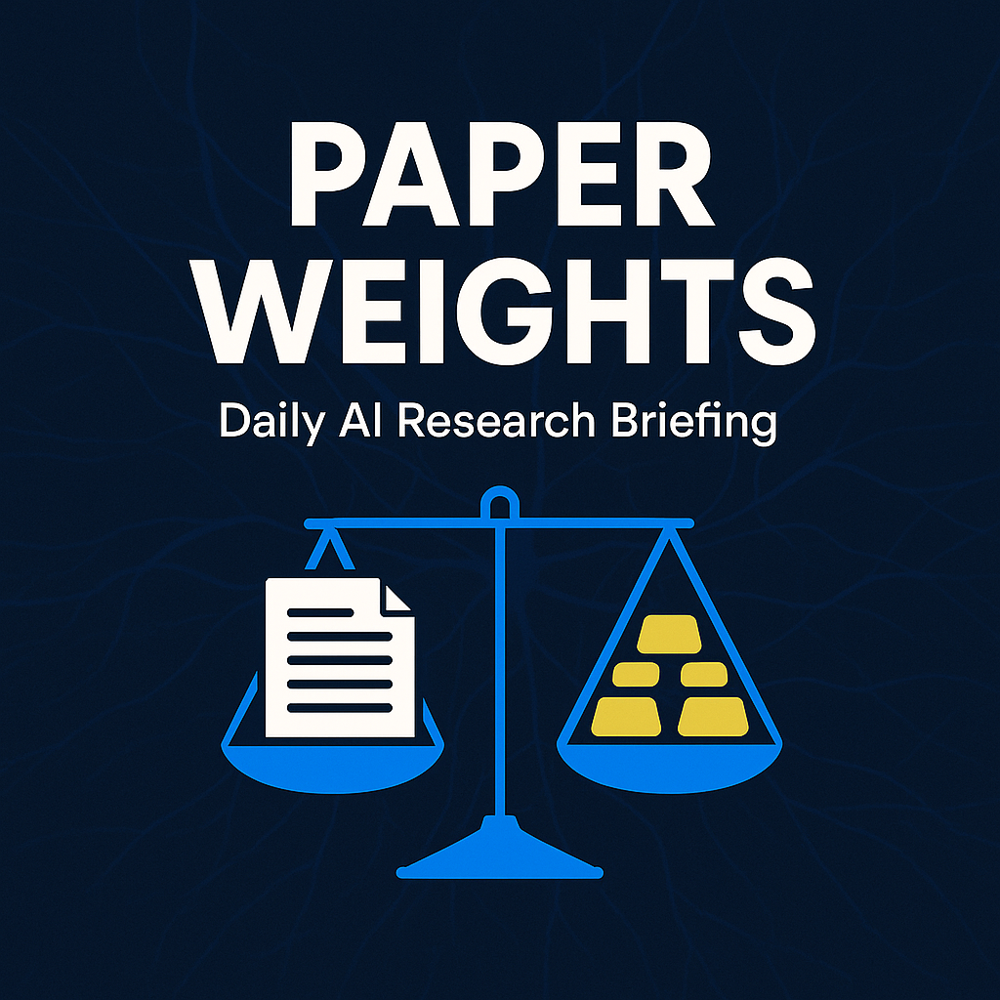

Podcast cover art for 'Paper Weights: Daily AI Research Briefing'. Clean, modern, minimal design. A stylized balance scale where one side holds a stack of research papers and the other side holds golden weights/ingots. Subtle neural network patterns in the background. Color palette: deep navy blue, electric blue accents, white text. The text 'PAPER WEIGHTS' should be bold and prominent at the top. Below in smaller text: 'Daily AI Research Briefing'. Professional podcast thumbnail style, square format, high contrast for small display sizes.Podcast cover art for 'Paper Weights: Daily AI Research Briefing'. Clean, modern, minimal design. A stylized balance scale where one side holds a stack of research papers and the other side holds golden weights/ingots. Subtle neural network patterns in the background. Color palette: deep navy blue, electric blue accents, white text. The text 'PAPER WEIGHTS' should be bold and prominent at the top. Below in smaller text: 'Daily AI Research Briefing'. Professional podcast thumbnail style, square format, high contrast for small display sizes.Podcast cover art for 'Paper Weights: Daily AI Research Briefing'. Clean, modern, minimal design. A stylized balance scale where one side holds a stack of research papers and the other side holds golden weights/ingots. Subtle neural network patterns in the background. Color palette: deep navy blue, electric blue accents, white text. The text 'PAPER WEIGHTS' should be bold and prominent at the top. Below in smaller text: 'Daily AI Research Briefing'. Professional podcast thumbnail style, square format, high contrast for small display sizes.
{kind=link}

{kind=link}